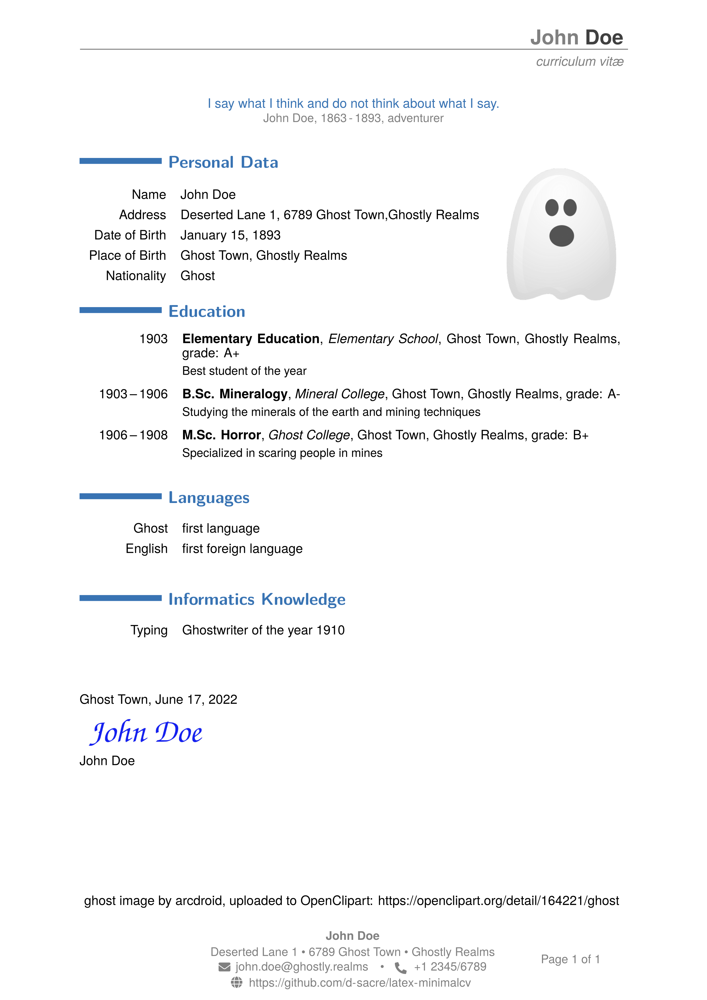
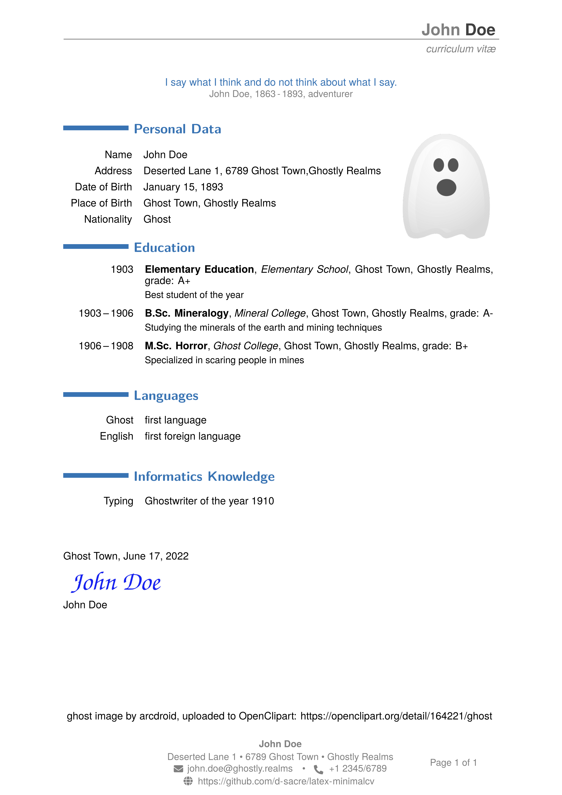

TYPESETTING PORTFOLIO
This webpage is a collection of my typesetting-related projects I have been working on since 2013. Most of the files are available in the associated github-repository: https://github.com/d-sacre/portfolio. If files are stored on an external server (e. g. a server of a publisher), I will provide the link to the original source.
LICENSING
If not stated otherwise, all the content on this webpage is licensed under Creative Commons Attribution-NonCommercial-NoDerivatives 4.0 International (CC BY-NC-ND 4.0), https://creativecommons.org/licenses/by-nc-nd/4.0/.
minimalcv: A LaTeX class for typesetting job applications and CV's
Last Update: June 21, 2022
For the last few years, I was using the moderncv LaTeX class to typeset job applications. Recently, when trying to change the font, adjusting the colors and other minor details, I hit a road block. Despite the class being initially published in 2016 and heavily used ever since, there was no manual available and the example files could not provide any information for my specific problem. Additionally, I was not completely satisfied with the header and footer designs in my previous documents. After some research in the moderncv.cls and associated usepackages, it seemed that I could achieve my goal quicker by writing my own class based upon the scrreprt class and the scrletter usepackage. After some quick research, I was able to create a minimal working example (MWE), with which I could start off the lengthy process of eliminating all the little bugs. Most challenging was to find the names of the many KOMAvar's in the 593 pages long manual so that I could apply my changes properly. In the end, I summarized as much of the settings as possible into a class file in order to prevent the main LaTeX file from getting too cluttered. The final main code structure I settled on is shown in the following code listing:
% !TeX program = lualatex
\documentclass{minimalcv}
% Load additional usepackages (optional)
% Setting styles
\KOMAoption{fontsize}{11pt} % fontsize by default 11 pt
% set the correct language for features like formating the date etc.
\usepackage[english]{babel}
% Here: Set KOMAvar's for addresses, phone numbers, etc.
\begin{document}
\begin{coverLetter}
\subject{SUBJECT}
\opening{OPENING}
LETTER CONTENT
\closing{CLOSING}
\enclosure{ENCLOSURE} % optional
\end{coverLetter}
\begin{vitae}
CV CONTENT
\cvclosing
\end{vitae}
\end{document}
This code (plus filling in the names, addresses, etc.) generates an example pdf which can be downloaded from here.
A converted bitmap image of the example pdf are the following two images.
 

docART: A utility for semi-automated pdf documentation generation
Last Update: June 26, 2022
Typesetting has been a complicated subject for centuries. In science, especially mathematics, many symbols are unique to the subject and bear little to no resemblance with standard
Latin letters. This meant for typesetting a mathematical text, special typewriters were mandatory. With the advent of computers, the challenge of how to interface with them for typesetting
purposes, format (“What You See Is What You Get” (WYSIWYG) versus “What You See Is
What You Want” (WYSIWYW)) and in the end print text shifted the complexity to an even higher level.
My first contact with professional, scientific typesetting was 2013. During my studies, I had to write many protocols and two theses.
Their requirements regarding scientific notation made LaTeX basically a necessity. Sometimes LaTeX was very frustrating, especially when for seemingly simple task
turned out to be a rabbit hole. However, over the course of my academic career, I encountered so many issues with Microsoft Word/PowerPoint like
encoding/font issues (colleagues with different operating system locales and Microsoft Office installations), unexplicable layout bugs (e.g. font turns semi-bold in part of the document for no reason and cannot be reset),
version control not working properly, etc..
Additionally, there are all the troubles arising from Microsoft Word originally being designed for office work and still not having implemented
all the typographical standards for scientific typesetting. Despite all the LaTeX shortcommings I encountered, these issues made me
really appreciative for the benefits of WYSIWYW tools like LaTeX. Still, the LaTeX learning curve is very, very steep and one has to write every routine/template by oneself.
This is very problematic for beginners, but also frustrating for advanced users, which I found out whilst trying to automatize a documentation I had to write.
In August 2021, a friend of mine suggested trying to design a semi-automated utility for documenting software/hardware development. He had
experienced similar issues in industry as I had in academia and wanted to see whether LaTeX could be a solution.
As design parameters, we decided to focus on:
- Automatic source code inclusion for code listings (code presented in documentation always up-to-date),
- Templates to facilitate tedious tasks like image inclusion, tables, etc.,
- Full support for version control (via git),
- Co-authors should be able to work on different parts seperately and afterwards being able to merge into one document,
- Everything should be achievable within one program/script (no export/re-import),
- Usage of a master theme (not user editable, only by documentation responsible) with the possibility for inclusion of end user options,
- User friendly (little to no LaTeX knowledge required),
- Import/include options for external tools like e.g. doxygen,
- Minimal amount of external tools which have to be installed besides the LaTeX backend,
- Cross-platform capability.
Challenges during development
Eventhough it might have been possible to achieve all of that with plain pdflatex via the mighty, but complicated and not well documented LaTeX3 backend, we decided from the start to use LuaLaTeX. If done properly, this does have any affect at all for the end user; the LaTeX code is identical to pdflatex, as long as one does not choose to use the Lua features. The main benefit of the LuaLaTeX backend is that any system font or otf/ttf font file can be loaded, which makes it more convenient for the end user to customize the document theme. For us, the developers, it meant that we could use a powerful scripting language whilst the LaTeX compilation process, which we thought could eliminate the need for shell-escape. However, it soon became apparent that despite all the claims stating Lua of LuaLaTeX has the same functionality as the standalone Lua interpreter, there were huge differences. Simple routines available in the Lua standalone as standard did not work as they should have. On the other hand, additional functionality which was neither documented in the Lua standalone documentation nor the LuaLaTeX handbook was available. In the end, the Lua way of doing things (especially strings, tables and the non-existent proper regex functionality) meant, that we had to bite the bullet and include Python via shell-escape. We did try to avoid this since (permanent) shell-escape is considered a severe security risk and therefor might render this tool unusable for industrial application.
As much as the inclusion of Python was the only way to create a working prototype, it almost ended the project the same time. It was planned to let the Python script return values to LaTeX, which than would be further processed within a LaTeX macro. After a lot of fiddeling, returning the value from Python to LaTeX worked as long as LuaLaTeX only had to print it to the pdf or LuaLaTeX command line. The needed functionality of storing it into a LaTeX macro for further processing could not be implemented. Since at the time no stable solution could be found, we decided to store the processed data into a file. The filename would be calculated in Python with a hashing function. To access the same data in LuaLaTeX, an identical hasing function has been implemented in Lua (although this meant to important a huge Lua hash library which was totally overkill for this task), which allowed to derive the correct filename within the LuaLaTeX ecosystem. With the proper filename determined, the data could now be loaded from the file into LuaLaTeX and be further processed.
In early December 2021, after a circa two month long break from development, we were confident that an alpha-release version of the utility could be released in January 2022. We started cleaning the project, deciding which features are required for a minimal viable product and which ones we would like to implement later. Around this time, we finalized the project name/catch phrase to be "docART – the Art of Documentation". The desired release date was a bit optimistic, but doable. However, the LuaLaTeX update from December 31, 2021, which was included in the first texlive 2022 release, changed something about the way LuaLaTeX handled shell-escape in the background. Until this day, we do not know exactly what happened; only our somewhat hacked shell-escape enabling workaround was causing the compilation to crash and therefor not producing a valid pdf output. The shell-escape workaround could relatively easily be replaced with a more guideline conform, secure one. Unfortunately, in a chain reaction, other modules we have written started now to fail. Especially tedious was the overhaul of the automatic table inclusion from external files. This was tricky even before the LuaLaTeX update and fixing the new bugs was extremly time consuming. We tried literally all the available LaTeX table packages in various combinations with Lua scripts. Three out of the four times we thought to have a good, working solution when suddenly, after days of work, a new, even harder to fix bug occured. In the end, we managed to find a solid solution. However, a trade-off between functionality and user comfort had to be made. Unfortunately, this holds true for the majority of the design parameters, but at least on April 30, 2022, we could release the first prototype to the public. The main goal of this project was to provide user friendly solution for inclusion of images, tables and source code listing in a LaTeX document. In the end, we achieved that kind of with the prototype.
Image inclusion
Multiple images can simply be included by calling:
\daFigureDefaultCaptionBelow[OPTIONS]{
PATH/TO/IMG1;
PATH/TO/IMG2;
...
PATH/TO/IMGN;
}{LABEL}{CAPTION}
This will automatically create a LaTeX figure with N images layouted to the default specifications or the OPTIONS in the optional argument.
For example, specifying the option "grid=2x4" and providing file paths for N = 7 would generate the following figure: Table from file
A similar approach was chosen for automatic inclusion and formatting of tables from files. The macro
\daTableDefaultFancyCaptionBelow[COLALIGN]{FILEPATH}{LABEL}{CAPTION}
will for example transform the following csv-file
module,PSL,license
os,yes,PSF
sys,yes,PSF
re,yes,PSF
time,yes,PSF
hashlib,yes,PSF
xml.etree.ElementTree,yes,PSF
csv,yes,PSF
to the nicely formatted table with highlighted header and odd rows. Source code listing from file
The automatic source code listing feature that sparked the idea for the whole project was implemented as follows:
\daListingCaptionBelow[OPTIONS]{FILE}{TAG}{LABEL}{CAPTION}
The specified FILE will be checked for changes during each LuaLaTeX compilation of the document. When changes have occured, the source
code that will be included into the pdf will be automatically updated.Sometimes it is desirable not to include the complete source file, but only part of it. This can be done by specifying the TAG (default style: +++TAG+++) at least twice within a comment in the source file (similar to a doxygen comment). The content between the two matching tags will be included into the pdf, whereas all other occuring tags and the rest of the content will be ignored.
As an example, the following "Hello World" program written in C++
// Requires C++ 17 or higher
#include <iostream>
#include <ctime>
int main() {
std::time_t result = std::time(nullptr);
std::cout << " Hello World, it is " << std::asctime(std::localtime(&result));
return 0;
}
will be typeset like this:
\lstset{style=STYLE}
Besides the visible line separation in the listing background (which only some pdf readers do show), the
biggest flaw is that all the synatx highlighting styles have to be changed/defined manually by the user.
The current LaTeX backend would support hundreds of languages/dialects, but does not provide the necessary
styles.
Conclusion and outlook
Overall, the project was way more difficult than anticipated. In the end, condensing the generality of LaTeX into one semi-automatic template did not work out. LaTeX is simply not designed for this; the users are expected to write their own custom, very specific macros. It seems like docART follows the TeX tradition of being just another macro compilation: LaTeX is a TeX macro collection to make working with TeX easier; in the same sense, docART is a LaTeX macro collection to make life with LaTeX easier.
However, the prototype turned out to be a promising proof-of-concept. It might not be the general template we hoped to create in the beginning, but it has some interesting and effective solutions. As much as the LuaLaTeX update has set back the project, it also forced us to re-think everything, which in the end resulted in a way more mature prototype. Actually, the alpha-2022-04-30 is in a state that a lot of the desired features now could be implemented. Perhaps we might revisit the project one day and try to push the limits of user friendliness further.
The project is available at
https://github.com/d-sacre/docart-documentation-utility
under
GNU Public License (GPL-3.0).
Please note that the backend is comprised of many other projects, all of which have their own license agreement.
Special thanks to the project's co-developer Martin Stimpfl for the inital idea and support throughout the whole project.

Squaring the circle
Squaring the circle with LaTeX is very simple: Just use nodes with shapes and specify the number of the polygon sides. To spice it all up, add some color. Works with plain LaTeX; no Lua, expl3 or (much) pgf needed. Just a \foreach loop and the classic LaTeX counter. Source code available here. License: Creative Commons Zero (CC0 1.0).
Tags
Typesetting LaTeX LuaLaTeX TikZ pgfplots pgfplotstable